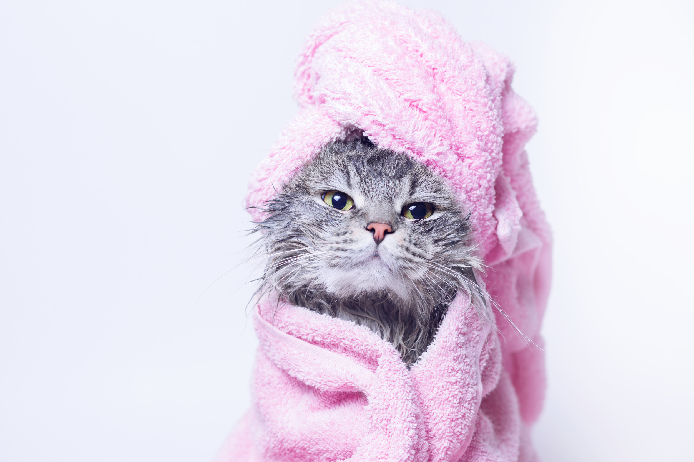
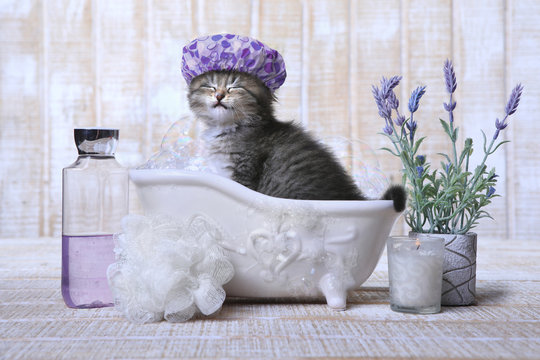
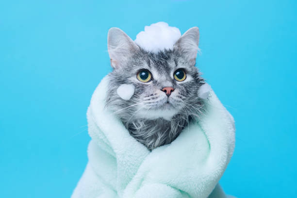

Welcome To The Paw Lounge
  
The Paw Lounge is Ireland's first Luxury Cat Spa and Cat Cafe owned and ran by caring, dedicated, and pet-loving professionals.
Our Spa offers an oasis of tranquility for our feline friends, providing cat grooming and spa services using only the best products available.
At the Paw Lounge we are dedicated to giving your cat the luxury they deserve.
The Paw Lounge is ireland's first cat exclusive grooming salon and spa! Our founder, Gráinne, is excited to offer a safe place for Irish cats to be groomed & cared for in a dog-free, low-stress environment.
We offer all cat grooming services starting with basic grooming such as regular nail trims, belly shaves, baths and the more luxurious grooming needs like Lion Cuts, De-Shedding Treatments and Lollipop Cuts.
We are by appointment only & only offer one-on-one spa services. Please see our Spa Menu for all available treatments.